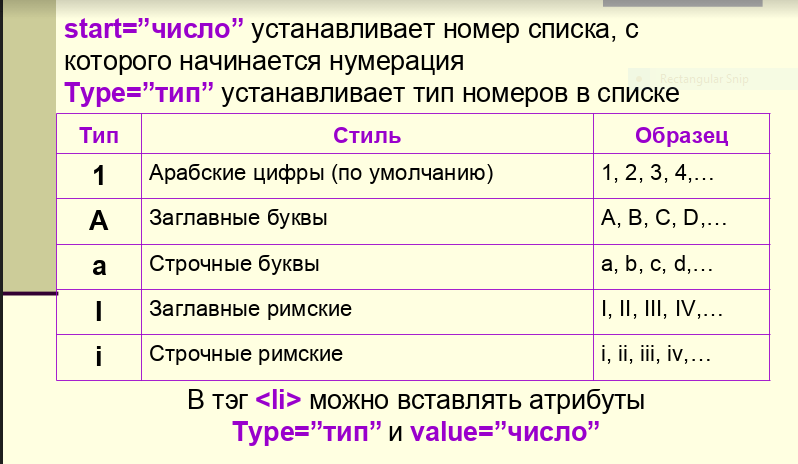

После написания первой части своего туториала, имевшей, к моему удивлению, большой успех, и даже завоевавший внимание моей учительницы по информатике, я, конечно, стал временами задумываться о написании сиквела, но до дела руки всё никак не доходили. Но потом, опять случилось нечто, что всё же заставило меня сесть за написание второй части...
Контрольная работа. (ну, или самостоятельная, хз, я прогулял урок) (по уважительной причине!!!!!!!!)
Собственно, никто из моего класса, видимо, не был в состоянии написать контрольную, кроме меня (если вы к таковым не относитесь, не принимайте за личное оскорбление, я говорю о большинстве). И именно поэтому я всё же решился сесть за создание второй части, за, не побоюсь этих слов, долгожданный сиквел легендарного сайта.
Итак, Артём Карепер, совместно со своей Второй и Третьей личностями, при поддержке Google и StackOverflow, представляет:
В домашнем задании (которое я не делаю), нам было предложено создать веб-страничку, меняя на ней шрифты, их цвета и размеры. И все бы хорошо, казалось бы: работа со шрифтом - одно из самых базовых и полезных умений начинающего веб-дизайнера. Вот только способ, который предлагался в задании, вызвал у меня некоторые подозренния....
Это был тег font, признанный устаревшим с 2008 года. И несмотря на то, что он ещё поддерживается большинством браузеров, никто не использует его. Типо, вообще.
Но как же, спросите вы, работать со шрифтами? Ответ прост: CSS.
Конечно, прямо сейчас вдаваться в подробности того, что такое CSS и как его использовать я не буду. Но рассказать о работе со шрифтами - почему бы и нет?
Итак, если вкратце, то CSS - это язык, дополняющий уже знакомый нам HTML, и позволяющий изменять внешний вид различных его элементов. Простейший способ добавить CSS к любому HTML элементу - при помощи аттрибута style:
<p style="здесь будет наш CSS код!"></p>
В такой базовой форме, код на CSS принимает следующий формат:
<p style="параметр: значение; параметр2: значение; ещеОдинПараметр: значение;"></p>
(не забывайте закрывать кавычки в конце! и точку с запятой тоже! и двоеточие! вообще ничего не забывайте! я запрещаю! ы)
Итак, как мы видим, формат весьма прост: мы пишем название параметра, затем двоеточие, и затем значение. Перечисляем же параметры мы через точку с запятой, ставя её в конце каждого значения.
Теперь поговорим о трёх параметрах, которые нам понадобятся для работы со шрифтами. Вот они:
font-family - буквально с английского, семья шрифтов - позволяет изменить шрифт текста
font-size - буквально с английского, размер шрифта - думаю, тут всё понятно из названия, очевидно, этот тег позволяет запускать искуственные спутники на орбиту на первой космической скорости в домашних условиях
данный тег принимает значения в формате pt: font-size: 10pt;
color - буквально с английского, цвет - ну тут уж точно всё понятно.... да?
данный тег имеет несколько стандартных значений, являющихся цветами на английском языке, например: white, black, green, yellow, pink и т.д.
Итак, теперь, если вам скажут задать текстовому элементу шрифт Arial 103 размера с розовым цветом текста, вы сможете прописать следующий код:
<p style="font-family: Arial; font-size: 103pt; color: pink;"></p>
Итак, я только что вернулся из ада. Точнее, с просмотра презентации о списках из нашего домашнего задания. Мои руки всё ещё трясуться под впечатлением от этого страшного места, а всё мое сознание в недоумении и отчаянии - так что простите меня за груммамтические ашипки в дальнейшем тексте.
Однако, шутки шутками, а в той презентации, создатель НАМЕРЕННО не закрывал теги li. Это не то что устарело - это изначально в корне неправильно, и карается законом по статье "насилие над браузером". ТЕГИ. НАДО. ЗАКРЫВАТЬ!!!!! НИГДЕ не сказано, что тег li является исключением. Следовательно, вы провоцируете браузер на потенциальные ошибки. Оно вам надо?
Короче, меня батя скоро спать выгонит, поэтому сразу к теме: списки. Существуют три типа списков:
ul - unordered list - ненумерованный список
ol - ordered list - нумерованный список
dl - description list - список определений
Теги ul и ol схожи в использовании. Внутрь них вставляются теги li:
<p>Синонимы к слову "лох":</p>
<ul>
<li>Дурак</li>
<li>Несведущий</li>
<li>Олух царя небесного</li>
</ul>
Выглядеть это будет так:
Синонимы к слову "лох":
У тега li есть аттрибут type, принимающий разные значения. К примеру:
<ul>
<li type="disc">Krujo4ek!</li>
<li type="square">Kvadratik!</li>
<li type="circle">Kontur krujo4ka!</li>
</ul>
Тег ol работает схожим образом, но имеет другие атрибуты. Тут мне всё же стоит отметить, что презентация всё же была не так плоха, и включала в себя и полезную информацию тоже. Поэтому, дабы не повторяться, включу сюда вырезку из той самой презентации:
Вот только, поправочка: аттрибуты type и start стоит вставлять не в li, а в ol:
<ol type="1" start="103">
<li>Дэнни</li>
<li>лох</li>
<li>иди</li>
<li>спать</li>
</ol>
Однако существует ещё и третий тип списка - список определений. Его нужно рассматривать отдельно, так как он не похож на остальные виды списков по структуре. Список определений - это список, в котором каждому элементу соответствует ещё и описание. Итак, как всегда, я вначале приведу пример, а потом подробно объясню, как и почему он работает:
<dl>
<dt>Заголовок!</dt>
<dd>Описание!</dd>
<dt>Опять заголовок!</dt>
<dd>Опять описание! Невероятно!</dd>
</dl>
Итак, что же мы видим из этого примера?
<dl> - descriptive list - создает список определений. Внутри него будут находиться теги dt и dd.
<dt> - descriptive title - обозначает название элемента.
<dd> - descriptive description - обозначает описание элемента.
Думаю, на этом со списками можно заканчивать (а учитывая, что я пишу это с телефона в полдвенадцатого ночи, со списками не только можно, но и нужно заканчивать).
У многих людей во время выполнения прошлого домашнего задания возникли дополнительные вопросы, связанные с тем, что я, к сожалению, не смог покрыть и разъяснить в своем предыдущем произведение всё. Поэтому, несколько дополнений:
Чтобы задать элементу цвет фона, можно использовать тег bgcolor:
<body bgcolor="white"></body>
Если вместо русских букав браузер отображает на сайте какую-то ересь, то сразу после тега head нужно прописать следующее:
<meta charset="UTF-8" />
Это поможет браузеру правильно отрисовать русские шрифты, задав использование современного набора символов вместо устаревшего.
И, наконец, если вы хотите добавить на ваш сайт картинку, создайте папку, закиньте туда картинку и файл с сайтом (очень важно чтобы сайт и картинка были в одной папке!), и пропишите следующий код:
<img src="название_вашей_картинки.png" width="300" />
(width - это атрибут, отвечающий за размер картинки, а 300 - это просто пример значения. этот аттрибут не является обязательным, но он может пригодиться, чтобы задать картинке нужный размер.)
ХАЧЮ СПАТЬ ХАЧЮ СПАТЬ ХАЧЮ СПАТЬ ХАЧЮ СПАТЬ ХАЧЮ СПАТЬ АААААААААА ПАМАГИТИ
А если серьезно, на этот раз нам хотя-бы объяснили тему. Объяснили неправильно, но это уже прогресс.... Вобщем, да. Ну или нет. Хз. Ы. Бе.